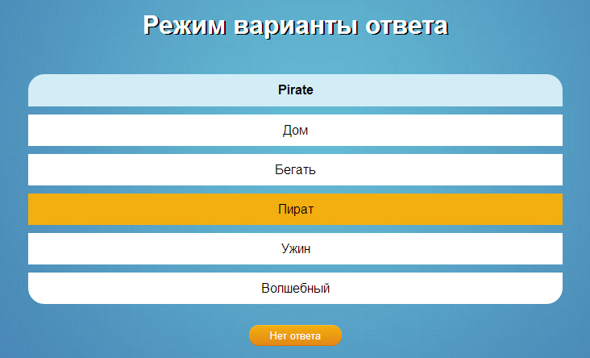
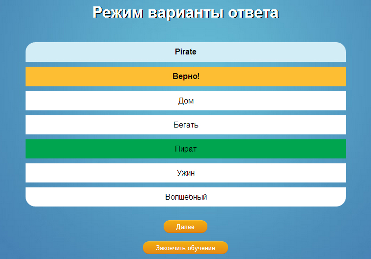

На данной странице вам необходимо перевести предложеное слово с английского языка на русский.
Для этого нужно ввести в поле ввода текста верный, по вашему мнению, русский эквивалент английского слова.
Если вы затрудняетесь дать ответ, нажмите "Нет ответа".
Если же перевод не составил для вас сложности, то необходимо нажать "Проверить", и вы перейдете на следующую страницу.

Здесь вам будет представлен резутьтат вашего ответа ("Верно!" или "Неверно!").
В случае неверного ответа у вас есть возможность узнать правильный перевод слова.
Если желаете продолжить обучение, нажмите "Далее", в противном случае - "Завершить обучение".

Здесь вам представлено слово на русском языке, неоходимо вспомнить его эквивалент на английском, и после этого нажать "Показать ответ"
(Советуем не наживать на кнопку, пока действительно не вспомните перевод, ведь в ваших интересах, найти наиболее точный перевод).

Вам представлен правильный вариат перевода. Теперь необходимо оценить насколько точно ваш ответ соотвествует представленному, для это необходиимо нажать
соответствующую кнопку: "Неверно", "Близко", "Верно". Мы надеемся на вашу адекватность и честность при оценке своих знаний :)

Здесь вам представлено слово на английском языке, неоходимо выбрать из предложенных вариантов правильный перевод слова (правильный ответ один).

Вам представлен результат вашего ответа, если вы ответили првильно, то увидите соответствующие сообщение, и ваш ответ будет выделен зеленым цветом.
В противном случаее ваш ответ загориться красным, а правильный ответ будет выделен зеленым цветом.
Удачи в изучении новых слов!